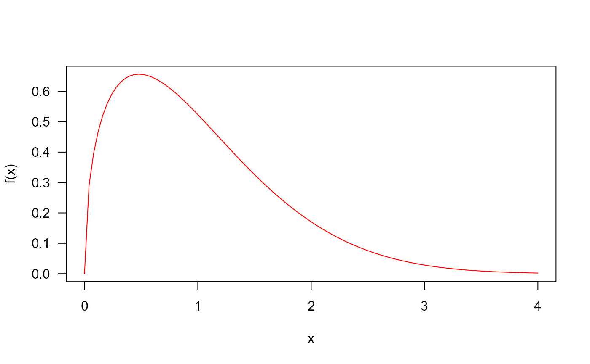
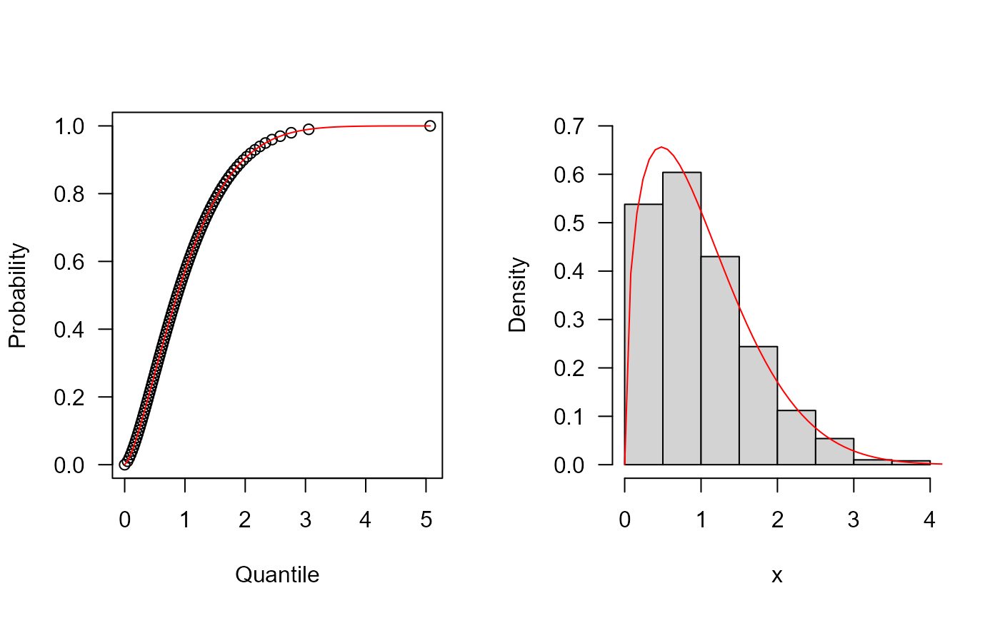
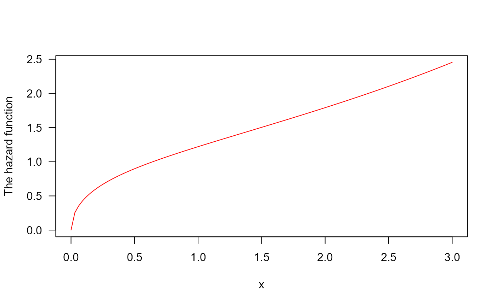

Density, distribution function, quantile function,
random generation and hazard function for the generalized Gompertz distribution with
parameters mu sigma and nu.
dGGD(x, mu, sigma, nu, log = FALSE) pGGD(q, mu, sigma, nu, lower.tail = TRUE, log.p = FALSE) qGGD(p, mu, sigma, nu, lower.tail = TRUE, log.p = FALSE) rGGD(n, mu, sigma, nu) hGGD(x, mu, sigma, nu)
| x, q | vector of quantiles. |
|---|---|
| mu, nu | scale parameter. |
| sigma | shape parameters. |
| log, log.p | logical; if TRUE, probabilities p are given as log(p). |
| lower.tail | logical; if TRUE (default), probabilities are P[X <= x], otherwise, P[X > x]. |
| p | vector of probabilities. |
| n | number of observations. |
dGGD gives the density, pGGD gives the distribution
function, qGGD gives the quantile function, rGGD
generates random deviates and hGGD gives the hazard function.
The Generalized Gompertz Distribution with parameters mu,
sigma and nu has density given by
\(f(x)= \nu \mu \exp(-\frac{\mu}{\sigma}(\exp(\sigma x - 1))) (1 - \exp(-\frac{\mu}{\sigma}(\exp(\sigma x - 1))))^{(\nu - 1)} ,\)
for \(x \geq 0\), \(\mu > 0\), \(\sigma \geq 0\) and \(\nu > 0\).
El-Gohary A, Alshamrani A, Al-Otaibi AN (2013). “The generalized Gompertz distribution.” Applied Mathematical Modelling, 37, 13--24.
Johan David Marin Benjumea, johand.marin@udea.edu.co
## The probability density function par(mfrow = c(1, 1)) curve(dGGD(x, mu=1, sigma=0.3, nu=1.5), from = 0, to = 4, col = "red", las = 1, ylab = "f(x)")## The cumulative distribution and the Reliability function par(mfrow = c(1, 2)) curve(pGGD(x, mu=1, sigma=0.3, nu=1.5), from = 0, to = 4, ylim = c(0, 1), col = "red", las = 1, ylab = "F(x)") curve(pGGD(x, mu=1, sigma=0.3, nu=1.5, lower.tail = FALSE), from = 0, to = 4, ylim = c(0, 1), col = "red", las = 1, ylab = "R(x)")## The quantile function p <- seq(from = 0, to = 0.99999, length.out = 100) plot(x = qGGD(p=p, mu=1, sigma=0.3, nu=1.5), y = p, xlab = "Quantile", las = 1, ylab = "Probability") curve(pGGD(x, mu=1, sigma=0.3, nu=1.5), from = 0, add = TRUE, col = "red") ## The random function hist(rGGD(1000, mu=1, sigma=0.3, nu=1.5), freq = FALSE, xlab = "x", las = 1, ylim = c(0, 0.7), main = "")## The Hazard function par(mfrow=c(1,1)) curve(hGGD(x, mu=1, sigma=0.3, nu=1.5), from = 0, to = 3, col = "red", ylab = "The hazard function", las = 1)